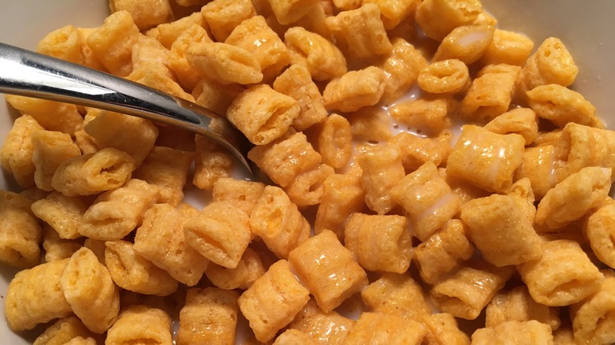

Captain Crunch

Description: The Perfect Bowl of Captain Crunch
As a kid, I always prided myself on how good of a captain crunch cereal bowl I could pour. Here is my unmatched recipe
Ingredients
- Milk (whichever type you prefer)
- Captain Crunch Cereal Box(with berries of course)
- Bananas (optional)
Steps
- Retrieve cold milk from the fridge....actually no, leave it in the fridge. Milk has to be as cold as possible
- Retrieve bowl from wherever you have your bowls....make it a big bowl, treat yourself
- Get box of cereal and pour 2 1/2 cups of captain crunch on to the bowl
- Get banana, peel banana, slice banana into slices, place sliced bananas on to bowl
- Finally! Pour cold milk on to bowl....ratio of milk to cereal? I prefer more cereal than milk but enough milk to where every cereal bit gets some milk lovin'
-